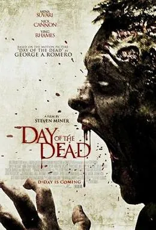

The genetics
The zombie outbreak is traced to a military bioweapon. Dr. Engel's government project set out to create a virus that would temporarily paralyse enemy combatants by affecting their nervous system, but the virus mutated, turned the scientists themselves into zombies and spread to the town. The CDC doctor who knows the truth is self-serving, pushing a woman into the zombies to save himself, and Engel ends as a monster, so both scientists are presented negatively. The film does not discuss genetics directly; the key ideas are a laboratory-made pathogen and its uncontrolled mutation, a common device of zombie fiction. Real viruses do mutate, but no mutation could turn a nerve agent-like infection into reanimation of the dead.
How genetics is portrayed
- Overall portrayal of genetics
- negative A military bioweapon project and its self-serving scientists cause the disaster.
- Outcome of the genetic intervention
- negative The bioweapon mutates and turns a town into zombies.
- Dr. Engel
- villain Aim: military (negative). He leads a government project to create a virus that paralyses enemy combatants; it mutates and causes the outbreak, and the zombified Engel kills Logan and attacks Sarah.
- Dr. Logan
- ambivalent Aim: military (negative). The CDC doctor took part in Engel's project, abandons a woman to the zombies to escape, then reveals the truth before Engel kills him.
The story
In this remake of George A. Romero's zombie film, the National Guard seals off the town of Leadville, Colorado, for a supposed 24-hour quarantine exercise. Corporal Sarah Bowman leaves her post with Private Bud Crain to visit her sick mother and finds that many townspeople have flu-like symptoms. At the overcrowded hospital, the sick suddenly turn into fast, ferociously strong zombies, and Sarah, Bud, Private Salazar and Dr. Logan of the CDC escape. Bud is bitten and turns, but keeps enough of his mind not to attack his friends. Rescuing Sarah's brother and his girlfriend from the radio station, the group reaches an underground bunker, where Logan reveals that the virus came from a government project led by Dr. Engel to create a bioweapon that would paralyse enemy soldiers, until it mutated. The zombified Engel kills Logan, Bud saves Sarah, and the survivors burn the horde and escape.